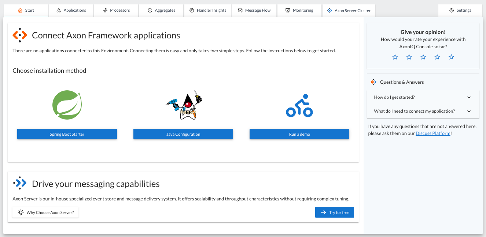
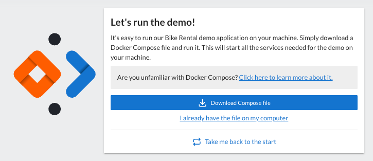
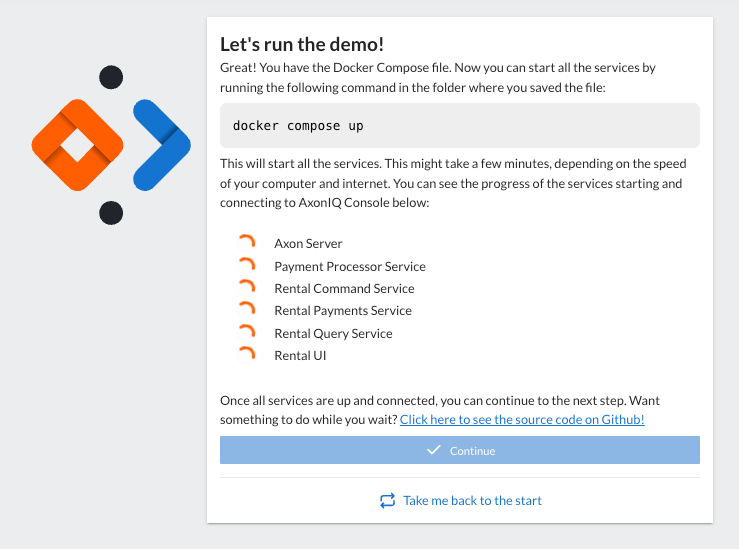
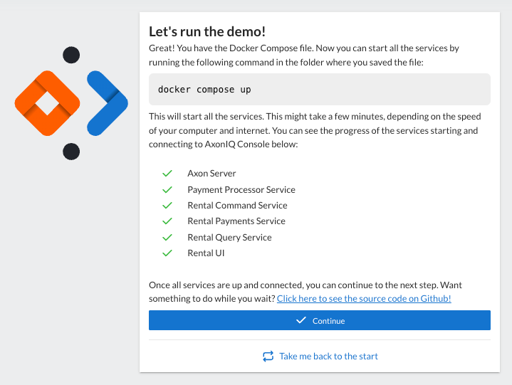
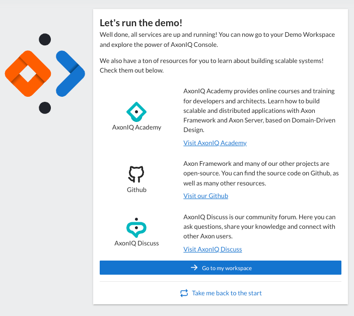

Using Docker-Based Bike-Rental Demo
AxonIQ Console provides a working Axon Framework-based application ready to run on your local machine and connect to your AxonIQ Console dashboard.
| If you already have your own Axon Framework-based application and have followed the steps described in the Prepare your Application for AxonIQ Console section of this tutorial, you can skip directly to the Monitoring your Application with AxonIQ Console section |
This demo application has a feature (thanks to the use of the AxonFramework-Firestarter library) that allows you to introduce some delays in specific components of your Axon-Framework application, or to configure the percentage of messages that will cause an error. This feature allows you to experiment by causing problems in your application and see how AxonIQ Console detects them. This exercise is an excellent way to see the real benefit of using AxonIQ Console.
Requisites.
Running the Docker-based bike-rental demo on your local machine is easy. The bike-rental demo with all its modules is available through a docker-compose.yml descriptor, so you will only need the following elements:
-
Docker Desktop and Docker compose installed on your local machine.
-
A free AxonIQ Console account. If you don’t already have one, you can follow the instructions in the Setting up your free AxonIQ Console account section of this tutorial.
Dowload the demo application.
During the sign-up process for your free AxonIQ Console account, you will see a dialog that allows you to choose whether you want to follow the instructions on how to connect your own application or start the demo.
|
Suppose you already have an AxonIQ Console account and you don’t see the previous panel that is part of the sign-up process. In that case, you can access the instructions to download the Docker-based demo application by creating a new environment within a workspace. Then, in the 'Start' tab, below the "Connect Axon Framework applications" section, you will see the three options to connect your custom application or start the demo.  |
When you click the "Run Demo" button, you will see another dialog that allows you to download the docker-compose descriptor file that will download and run the demo application locally.

Click on the 'Download Compose file' button and save the docker-compose.yml file to a local folder on your machine.
The docker-compose.yaml file configures multiple docker images with:
-
The various microservices that compose the application: Payment Processor Service, Rental Command Service, Rental Payments Service, Rental Query Service and Rental UI.
-
An Axon Server instance that the different microservices will use as the event store and message broker.
These modules already have credentials configured to connect to your AxonIQ Console dashboard.
The docker-compose.yaml file provided in this step is customized for your specific account and AxonIQ Console workspace. Please do not share this file with other colleagues; it will connect their applications to your workspace. If you want to share the power of AxonIQ Console with your colleagues, point them to follow this guide, and they will have their own version of the docker-compose file available when they sign up.
|
Running locally the demo application.
When you download the docker-compose.yml file, AxonIQ Console displays a dialog box to indicate it is waiting for the application components to connect.

All you need to do now is open a terminal, go to the folder where you downloaded the docker-compose.yml file and type the following command:
❯❯ docker compose upYou will see Docker start downloading the various Docker images needed to run the demo application and immediately start the containers. Depending on your internet connection, this may take some time.
❯❯ docker compose up
[+] Running 8/14
⠏ service-rental-payment [⡀] 15.12MB / 79.56MB Pulling 268.9s
⠦ 1044f17e2323 Downloading [=========> ] 15.12MB/79.56MB 266.7s
✔ axon-server Pulled 1.6s
✔ service-payment Pulled 194.9s
✔ 7ae84cee97a8 Pull complete 113.5s
✔ 7ed31eaf5ef8 Pull complete 192.4s
✔ 9ee97334f60b Pull complete 192.4s
✔ 29e6b66d6884 Pull complete 192.8s
⠇ service-ui [⣤] 29.19MB / 55.7MB Pulling 268.9s
⠦ 2389b0240d5b Downloading [==========================> ] 29.19MB/55.7MB 266.7s
✔ service-command Pulled 218.0s
✔ 0397a9d5ba94 Pull complete 215.7s
⠇ service-query [⣷] 75.69MB / 79.56MB Pulling 268.9s
⠦ 70f9be2efb6e Downloading [===============================================> ] 75.69MB/79.56MB 266.7sAfter the download is complete and the containers are launched, you will see the demo application components connected to AxonIQ Console:

Click on the "Continue" button.
Congratulations, you have successfully connected your application to AxonIQ Console. Before showing you the AxonIQ Console dashboard and all the information about how your system behaves, you will see another dialog with some links that may be useful for learning more about "AxonIQ Console Tools".

Click on the "Go to my workspace" to access your AxonIQ Console dashboard and see how AxonIQ Console monitors your application.
In the next step we will look at how AxonIQ Console displays the information about your application’s behavior and performance.